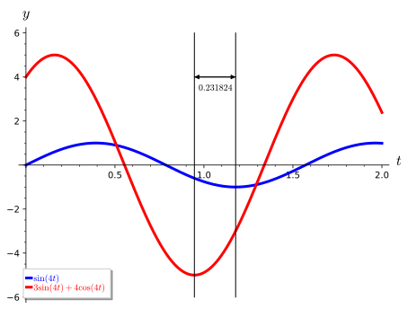
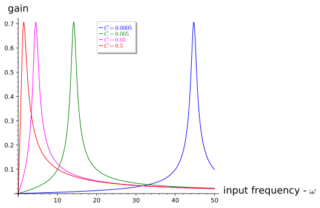

Project 4.5.1. Project—Tuning a Circuit.
Differential equations prove exceptional at modeling electrical circuits. In Subsection 4.1.1, we modeled a simple RLC circuit, which is fundamental to larger circuit building. We found that circuits with the three of the most fundamental electrical objects, resistors, capacitors, and inductors, can be modeled by constant coefficient, linear, second order differential equations. Consider the circuit in Figure 4.1.1. We found that the circuit can be modeled by
\begin{equation}
L I'' + RI' + \frac{1}{C} I = E'(t),\tag{4.5.1}
\end{equation}
where \(I(t)\) is the current flowing through the circuit, \(E(t)\) is the impressed voltage, \(R\) is the resistance \(R\text{,}\) and \(C\) is the capacitance. Of course we will also need to know \(I(0)\) and \(I'(0)\) if we wish to formulate an initial value problem. Notice that (4.5.1) is very similar to the spring-mass model developed in Subsection 2.1.2,
\begin{equation*}
mx'' + bx' + kx = f(t),
\end{equation*}
where \(m\) is the mass, \(b\) is the damping coefficient, and \(k\) is the spring constant (Table 4.5.1). 1 
| Spring-Mass Model | RLC Circuit |
| mass \(m\) | inductance \(L\) |
| damping \(b\) | resistance \(R\) |
| spring constant \(k\) | inverse of capacitance \(1/C\) |
| forcing function \(f(t)\) | derivative of induced voltage \(E'(t)\) |
(a) Simple RLC Circuit Model, Solution, and Interpretation.
We now examine a circuit in which a current is present and does not have a driving \(E(t)\text{,}\) expecting things to dampen out, in this case current to run out. Let us consider an RLC circuit as depicted in Figure 4.1.1 in which we have an initial current, \(I(0) = 3.2\) amps with a resistance of \(R = 7\) ohms, an inductance of \(L = 1\) henry, and a capacitance of \(C = 0.1\) farads. Since we have some current in the circuit already \(I(0) = 3.2\) at the start we shall not need an inducing \(E(t)\text{,}\) so \(E(t) = 0\text{.}\) Let us see what happens to the current in the circuit by solving the appropriate RLC circuit differential equation
\begin{equation*}
1 \cdot I'' + 7I' + \frac{1}{0.1} I = 0, \quad I(0) = 3.2, \quad I'(0) = 0.
\end{equation*}
Of course, this initial value problem might be easier analyze in the form,
\begin{equation}
I'' + 7I' + 10 I = 0, \quad I(0) = 3.2, \quad I'(0) = 0.\tag{4.5.2}
\end{equation}
(i)
Solve the RLC circuit differential equation (4.5.2) for \(I(t)\text{.}\) If you use Sage to solve this equation, remember that
I is the reserved symbol for \(i\text{,}\) the square root of \(-1\text{.}\)
(ii)
Consider the values of \(R\) to be \(0.007\text{,}\) \(0.07\text{,}\) \(0.7\text{,}\) \(7\text{,}\) \(70\text{,}\) and then \(700\text{,}\) and solve (4.5.2) in each case, keeping all other values the same. Plot the solutions for the current in the circuit over the time interval \([0, 25]\) s with a vertical plot interval \([-3, 3]\) in each case. Identify each plot with its associated \(R\) value and describe what is happening to the current, \(I(t)\text{,}\) in each corresponding circuit over time, \(t\text{.}\)
Let us consider the differential (4.5.3) for an RLC circuit with driving voltage \(E(t) = \sin( \omega t)\) (current \(I(t) = y(t)\)),
\begin{equation}
L y'' + Ry' + \frac{1}{C} y = \omega \cos(\omega t).\tag{4.5.3}
\end{equation}
We can use Sage to solve this equation.
The solution is pretty long, but notice that is the transient solution that approaches zero as \(t \to \infty\) and then there is the steady state solution,
\begin{equation}
y_{\text{steady state}} = \frac{C^{2} R \omega^{2} \sin\left(\omega t\right) - {\left(C^{2} L \omega^{3} - C \omega\right)} \cos\left(\omega t\right)}{C^{2} L^{2} \omega^{4} + {\left(C^{2} R^{2} - 2 \, C L\right)} \omega^{2} + 1}.\tag{4.5.4}
\end{equation}
We would like to study gain, the ratio of the amplitude of the steady state output voltage, \(V_{\text{out}}\) to the amplitude of the input voltage, \(V_{\text{in}}\text{,}\) or \(V_{\text{out}} / V_{\text{in}}\text{.}\) We measure \(V_{\text{out}}\) as the amplitude of the steady state voltage across the resistance \(R\) in the circuit or
\begin{equation*}
V_{\text{out}} = R \cdot \text{Amplitude}(y_{\text{steady state}}(t)).
\end{equation*}
In our case \(V_{\text{in}}\) is just 1 for \(E(t) = \sin( \omega t)\text{.}\)
(b) Trigonometry Pause and Phase Angle.
The initial value problem
\begin{equation*}
ay'' + by' + cy = 0, \quad y(0) = y_0, \quad y'(0) = 0
\end{equation*}
has the following solution when the discriminant \(b^2 - 4ac \lt 0\text{,}\)
\begin{align}
y(t) \amp = A e^{-bt/2a} \sin\left( \frac{\sqrt{4ac - b^2}}{2a} t \right) + Be^{-bt/2a} \cos\left( \frac{\sqrt{4ac - b^2}}{2a} t \right)\tag{4.5.5}\\
\amp = e^{-bt/2a} \left( A \sin\left( \frac{\sqrt{4ac - b^2}}{2a} t \right) + B \cos\left( \frac{\sqrt{4ac - b^2}}{2a} t \right) \right).\tag{4.5.6}
\end{align}
If we let \(\omega = \sqrt{4ac - b^2}/2a\text{,}\) then (4.5.5) simplifies to
\begin{equation}
y(t) = e^{-bt/2a} (A \sin(\omega t) + B \cos(\omega t)).\tag{4.5.7}
\end{equation}
We wish to combine the sine and cosine terms in (4.5.7) into one sine function with a phase angle. We can do this because of the trigonometric identity,
\begin{equation*}
\sin(\alpha + \beta) = \sin \alpha \cos \beta + \sin \beta \cos \alpha.
\end{equation*}
Letting \(\alpha = \omega t\) and \(\beta = \theta\text{,}\) we have
\begin{align*}
A \sin(\omega t) + B \cos(\omega t) \amp = \sqrt{A^2 + B^2} \left( \frac{A}{\sqrt{A^2 + B^2}} \sin(\omega t) + \frac{B}{\sqrt{A^2 + B^2}} \cos(\omega t)\right)\\
\amp = \sqrt{A^2 + B^2}(\cos \theta \sin(\omega t) + \sin \theta\cos(\omega t))\\
\amp = \sqrt{A^2 + B^2} \sin(\omega t + \theta)
\end{align*}
The differential equation
\begin{equation*}
y'' + 6y' + 25y = 0, \quad y(0) = 1, \quad y'(0) = 0
\end{equation*}
has solution
\begin{equation}
y(t) = \frac{1}{4} e^{-3t} (3 \sin(4t) + 4 \cos(4t)).\tag{4.5.8}
\end{equation}
The phase shifted form of (4.5.8) is
\begin{align*}
y(t) \amp = \frac{5}{4} e^{-3t} \sin\left( 4t + \arctan\left( \frac{4}{3} \right) \right)\\
\amp = \frac{5}{4} e^{-3t} \sin\left( 4 \left( t + \frac{(\arctan(4/3)}{4} \right) \right)\\
\amp = \frac{5}{4} e^{-3t} \sin(4 ( t + 0.231824 ) ),
\end{align*}
where \(\omega =4\) and \(\theta = \arctan(4/3) = 0.231824\) radians.

(i)
Solve the initial value problem
\begin{equation*}
y'' + 10y' + 29y = 0, \quad y(0) = 1, \quad y'(0) = 0
\end{equation*}
(ii)
Convert the solution to phase angle format and compute the phase angle \(\theta\) in radians.
(iii)
Plot both solutions in Task 4.5.1.b.i and Task 4.5.1.b.ii on the same axis over the interval \([0,2]\) to confirm your analysis. What should you see?
(c) Back to the Circuit.
In our study of phase angle representation in the previous section we saw that the \(\sin(\omega t)\) and \(\cos(\omega t)\) terms of (4.5.4) can be combined into one sine term (albeit with a phase angle) with one amplitude,
\begin{equation}
\text{Amplitude}(y_{\text{steady state}}) = R \sqrt{\frac{C^{2} \omega^{2}}{C^{2} L^{2} \omega^{4} + {\left(C^{2} R^{2} - 2 \, C L\right)} \omega^{2} + 1}}.\tag{4.5.9}
\end{equation}
Thus, our gain (recall, gain is the ratio of the amplitude of the steady state output voltage, \(V_{\text{out}}\text{,}\) to the amplitude of the input voltage, \(V_{\text{in}}\)) is
\begin{equation*}
\text{gain} = R \sqrt{\frac{C^{2} \omega^{2}}{C^{2} L^{2} \omega^{4} + {\left(C^{2} R^{2} - 2 \, C L\right)} \omega^{2} + 1}}.
\end{equation*}
Here, \(V_{\text{in}} = 1\) for \(E(t) = \sin(\omega t)\) and has amplitude \(1\text{,}\) which is a function of \(R\text{,}\) \(L\text{,}\) \(C\text{,}\) and \(\omega\text{.}\) Gain is a measure of the response of the circuit to input voltage \(E(t)\text{,}\) which in this case is \(E(t) = \sin(\omega t)\text{.}\)
Let us fix \(R\) at \(1\) ohm and \(L\) at \(1\) henry and see what gain is in this case as a function of \(C\) over a range of \(\omega\) values. Let us “tune” this circuit by changing \(C\text{,}\) the size of the capacitance in the circuit and see how gain changes as input voltage frequency, \(\omega\text{,}\) changes.

Figure 4.5.4 illustrates the power of differential equation modeling. For we can alter parameters in our equation and see the results in a physical (in this case electrical) system. Indeed, we see in this plot that for a capacitance of \(C = 0.0005\) farads if we have an input voltage with a frequency around \(\omega = 45\) (\(44.7214\) to be precise) then the gain is greatest. Optimization is a calculus problem and we merely have to take the derivative of gain with respect to \(\omega\) and find where it is \(0\text{.}\) All other frequencies give smaller gain for this particular capacitance. In fact, we can say that as we decrease our capacitance the optimal frequency; i.e., frequency which gives highest gain, decreases and we might want to look into this for a more exact relationship. We shall do that in Task 4.5.1.d.
Put another way, we see that if our input voltage has a specific frequency, \(\omega\text{,}\) there is a unique capacitance, \(C\text{,}\) for this circuit that will maximize our gain. By changing \(C\) we can tune our circuit to maximize gain for a given input frequency, \(\omega\text{.}\) This is, in fact, how we tune a radio, for we change the capacitance of the radio's circuit so as to maximize the gain for the frequency (on our dial) that we wish to hear. So, the next time you try to find the station where Cousin Brucie is dedicating a Top Ten song from “Billie Bob” to “Sally May” know that a differential equation describes exactly what you are doing. How's that for cool?
(i)
Use your understanding of RLC circuits to show for an imposed \(E(t) = \sin(\omega t)\) on the RLC circuit given by
\begin{equation*}
L y'' + Ry' + \frac{1}{C} y = \omega \cos(\omega t), \quad y(0) = 0, \quad y'(0) = 0
\end{equation*}
the maximum gain is obtained when \(\omega = 1/\sqrt{LC}\) and thus we could tune our radio by changing the inductance \(L\) as well, if that were as convenient as changing the capacitance, which it is not. So let us stick to tuning by changing the capacitance \(C\text{.}\)
(d) Tune the Radio.
Tune the Radio. The Amplitude Modulated (AM) radio carrier frequencies are in the frequency range 535–1605 kHz. One Hz means \(1\) cycle per second while kHz means \(1,{}000\) cycles per second. The unit Hz is called a hertz. Carrier frequencies of 540 to 1600 kHz are assigned at 10 kHz intervals. The (Frequency Modulated (FM) radio band is from 88 to 108 MHz. 2  Recall 1 kHz means 1,000 cycles per second. So 660 kHz is oscillation at the rate of 660,000 cycles per second. We offer up a “radio”,
\begin{equation}
L \frac{dI^2}{dt^2} + R \frac{dI}{dt} + \frac{1}{C} I = E'(t),\tag{4.5.10}
\end{equation}
where \(E(t) = \sin(\omega t)\text{,}\) and ask you to tune in several stations by changing the capacitance and computing the optimal gain for these stations.
We will have to tell the circuit what initial current is present; i.e., \(I(0) = 0\) usually until we turn the switch on and also we can presume there is no change in the current intially; i.e., \(I'(t) = 0\text{.}\) Let us build this radio with the following values: \(E(t) = \sin(\omega t)\text{,}\) \(L = 0.033\) henrys, \(R = 100\) ohms, and \(C\) in farads can vary as needed to tune to various input frequencies \(\omega\text{.}\) We note that if we wish to have, say 540 kHz, then \(\omega = 540{,}000 \cdot 2\pi\text{,}\) and in general to have x kHz we will need \(\omega = x \cdot 1000 \cdot 2\pi\text{.}\)
(i)
Solve the differential equation (4.5.10) for the radio circuit.
(ii)
Collect the coefficients \(A\) and \(B\) of the steady state \(\sin(\omega t)\) and \(\cos(\omega t)\) terms, respectively. Show that all other terms will dissipate, i.e. go to zero quickly, leaving only \(\sin(\omega t)\) and \(\cos(\omega t)\) terms.
(iii)
Using the information above compute the gain as a function of capacitance \(C\) and input voltage frequency \(\omega\text{.}\)
(iv)
For a given input voltage frequency \(\omega\) determine the maximum gain for this circuit.
(v)
For several AM frequencies, say 540 kHz (\(\omega = 540000 \cdot 2 \cdot \pi\)), 880 kHz (\(\omega = 880000 \cdot 2 \cdot \pi\)), and 1520 kHz (\(\omega = 1520000 \cdot 2 \cdot \pi\)), plot gain as a function of the capacitance \(C\) to demonstrate that your maximum gain is what your formula in Task 4.5.1.d.iii predicts and that your radio is tuned in.